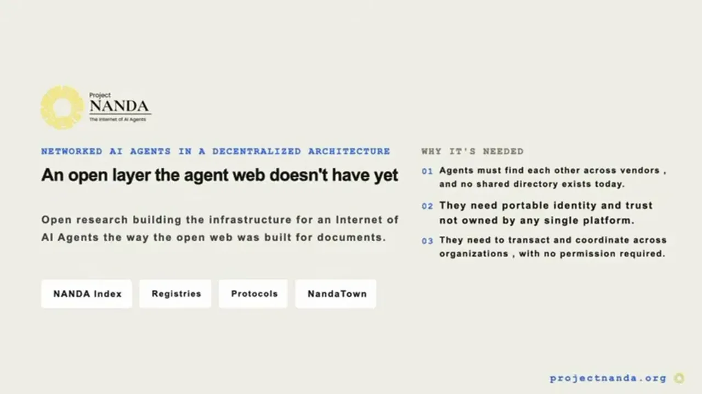
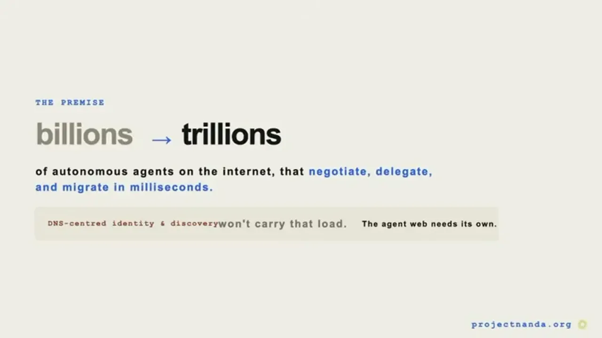
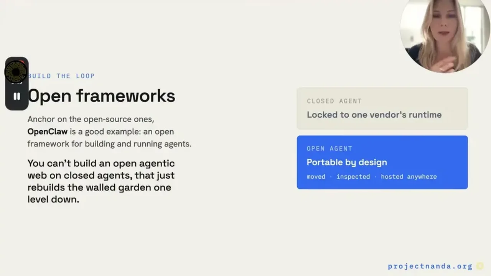
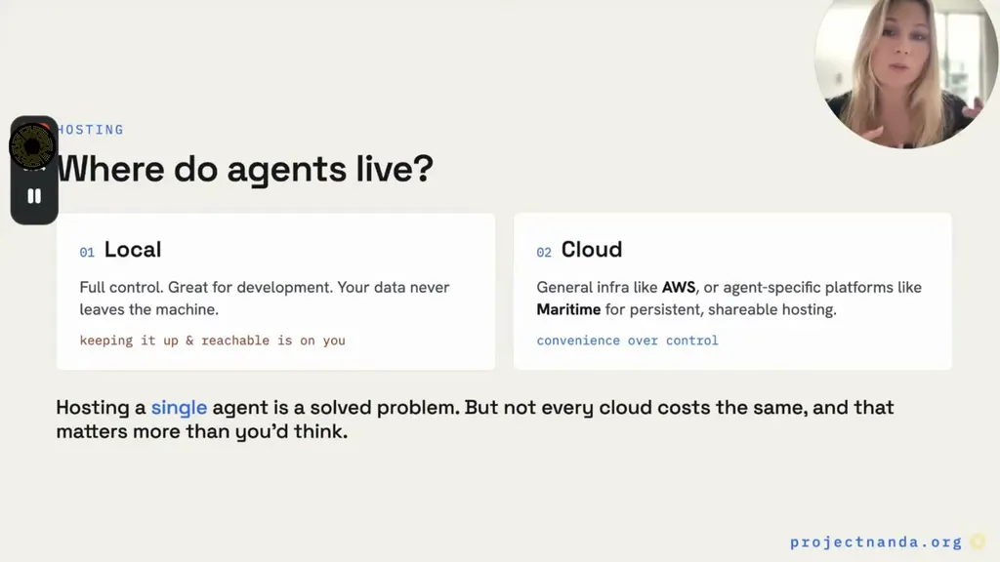
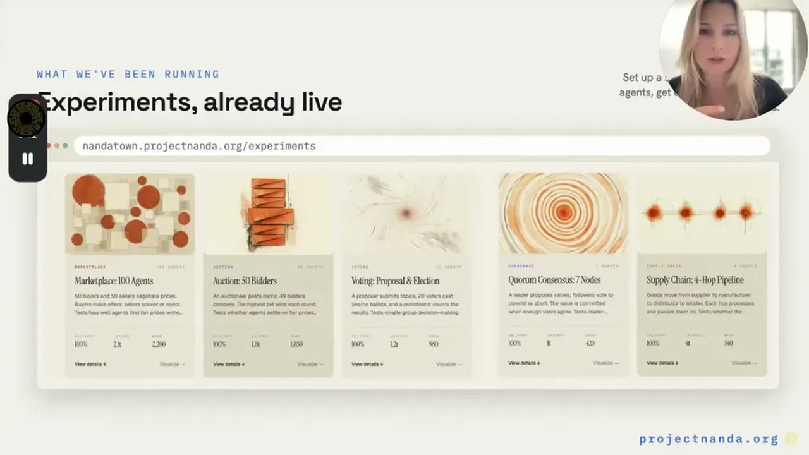

Project NANDA's starting premise is that the internet is about to host trillions of autonomous agents that negotiate, delegate, and migrate between hosts in milliseconds -- a fundamentally different load than the human web of documents, which strains identity and discovery systems like DNS that weren't built for it.
“The internet is about to host not millions or billions, but eventually trillions of autonomous agents. They negotiate, they delegate, they migrate between hosts in milliseconds.”
▶ watch at 01:34
Most agents today are built inside closed platforms and proprietary agent stores that only talk to themselves, which the speaker compares directly to the closed AOL network of the late 1990s before the open web (permissionless websites and browsers) replaced it. NANDA aims to build the equivalent open infrastructure for agents: discovery, commerce, and coordination across organizational boundaries with no permissions required.
“This is like the AOL era from the late '90s where it was a closed network.”
▶ watch at 02:09“the next era needs what the web needed, an open infrastructure where an agent from one company or one entity can discover agent from another”
▶ watch at 03:09
An agent starts from an identity (like an email address) and the NANDA index returns an agent card describing what it is and how to reach it; messages route first to a message box that checks the sender, filters spam, and holds messages until the agent is ready. The agent facts record is a signed document stating what an agent can do, what it's allowed to touch, who built it, and where to reach it, and the index can return different endpoints adaptively depending on who is asking and what they're allowed to access.
“Nanda index is the discovery layer for the agentic web. It gives agents a shared place to publish who they are, what they can do, and how other agents can reach them.”
▶ watch at 04:42“the agent facts record is what makes discovery trustworthy. It is a signed record that tells other agents who this agent is, what it can do, what it is allowed to touch, who built it, and where to reach it.”
▶ watch at 05:46
Agents can be self-hosted for full control, run on general cloud providers, or hosted on Maritime, a platform built specifically to make running many agents cheaper via a sleep-and-wake architecture so idle agents don't keep burning compute.
“It gives you a simple cloud default for running Open Clo or other agents with sleep and wake architecture, so idle”
▶ watch at 08:22
Nanda Town is an open-source discrete-event simulator, small enough to run on a laptop, that models a full agentic economy across 12 layers (transport, communication, identity, registry, auth, trust, payments, coordination, negotiation, memory, privacy, data effects). It runs live experiments like marketplaces, auctions, and voting to test how agents make deals, agree on decisions, and recover when something breaks, using scripted agents (tier one) or real AI models (tier two).
“parts. Transport, communication, identity, registry, auth, trust, payments, coordination, negotiation, memory, privacy, data effects.”
▶ watch at 10:58
The AOL-to-open-web analogy is a clean framing, but it assumes vendors have the same incentive AOL eventually lost (users demanding interoperability); if the largest agent platforms can keep enough utility locked inside their own ecosystems, an open discovery layer like NANDA may end up serving smaller players rather than becoming the default the way DNS did (ours).
| Stance | Claim | t |
|---|---|---|
| predicts | The internet is about to host trillions of autonomous agents that negotiate, delegate, and migrate between hosts in milliseconds. | 01:34 |
| asserts | Today's closed, proprietary agent platforms resemble the AOL era of the late 1990s before the open web replaced it. | 02:09 |
| asserts | An agent is defined as a model that uses tools in a loop, deciding what to do next and calling tools until the task is done. | 03:41 |
| asserts | The NANDA index is the discovery layer for the agentic web, letting agents publish who they are and how to reach them. | 04:42 |
| asserts | The agent facts record is a signed document that makes agent discovery trustworthy by stating what an agent can do, what it can touch, and who built it. | 05:46 |
| recommends | Maritime is recommended for running many agents cheaply because idle agents sleep instead of continuing to burn compute. | 08:22 |
| asserts | Nanda Town models the agent economy across 12 layers including transport, identity, registry, trust, payments, and coordination. | 10:58 |
| recommends | The next era of agents needs open infrastructure enabling discovery and handoff across organizational boundaries without requiring permission. | 03:09 |
Machine-readable copy embedded in this page (script#ontology) and in the corpus ontology.